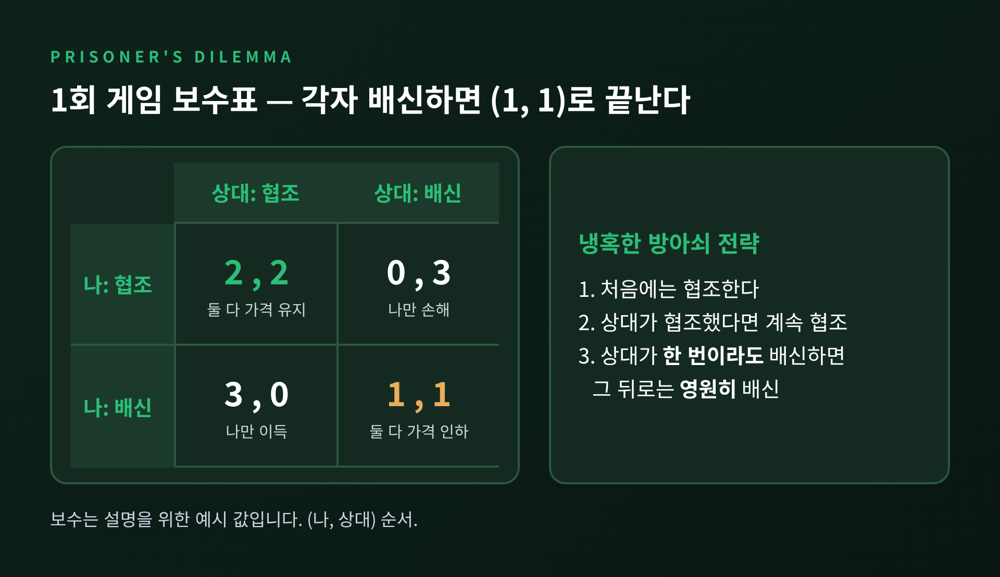
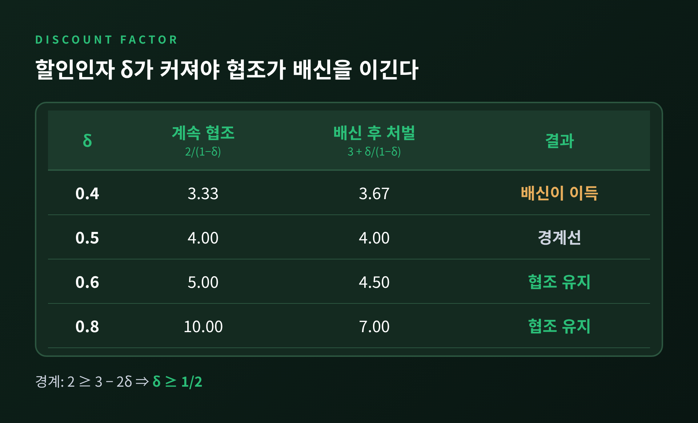
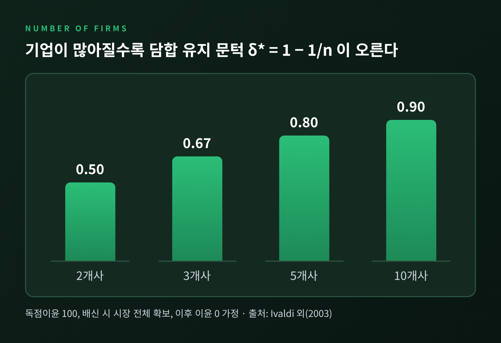
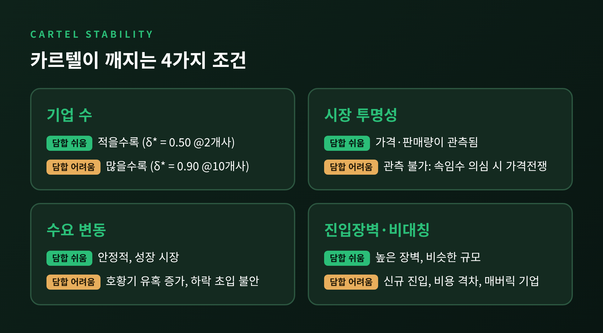
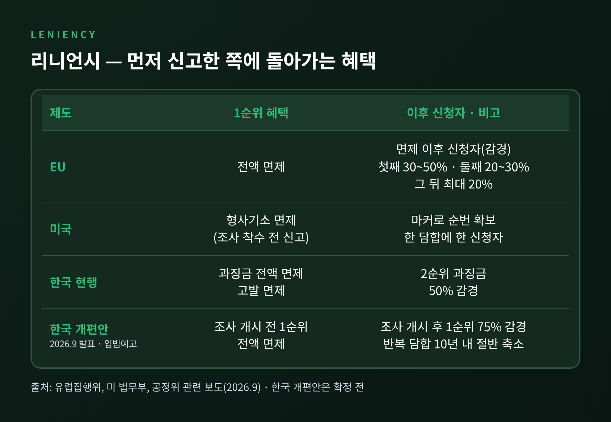

3줄 요약 1. 무한히 반복되는 죄수의 딜레마에서 냉혹한 방아쇠 전략이 담합을 지키려면, 예시 보수 기준으로 할인인자 δ가 1/2 이상이어야 합니다. 2. 기업 수가 늘수록(δ* = 1 − 1/n), 시장이 불투명할수록, 수요가 출렁일수록 담합은 깨지기 쉽습니다. 3. 리니언시는 '먼저 털어놓는 쪽이 이긴다'는 새 유혹을 얹어 카르텔의 균형을 흔듭니다.
오늘은 반복게임으로 담합이 왜 유지되고, 어떤 조건에서 무너지는지 정리해 보려 합니다. 계산은 가장 단순한 숫자 예시로 풀겠습니다. 마지막에는 경쟁당국이 이 구조를 어떻게 흔드는지, 리니언시 제도까지 살펴봅니다.
두 기업이 가격을 함께 높게 유지하면 둘 다 이익을 봅니다. 그러나 상대가 높은 가격을 지키는 동안 혼자 가격을 깎으면, 이번 한 번은 시장을 독차지합니다. 양쪽이 같은 계산을 하니 결국 둘 다 깎게 됩니다. 죄수의 딜레마입니다.
숫자로 보면 이렇습니다. 예시용 보수를 아래처럼 잡았습니다.
한 번뿐인 게임이라면 상대가 무엇을 하든 배신이 낫습니다. 그래서 (1, 1)로 끝납니다. 하지만 현실의 기업은 내일도, 내년에도 같은 시장에서 만납니다. 게임이 끝나지 않는다는 점이 모든 것을 바꿉니다.

반복게임에서 가장 단순한 협조 유지 장치가 냉혹한 방아쇠 전략(grim trigger)입니다. 규칙은 하나입니다. 상대가 한 번도 배신하지 않았으면 협조하고, 한 번이라도 배신하면 그 뒤로는 영원히 배신합니다.
이 전략을 믿고 협조를 이어갈지는 할인인자 δ에 달려 있습니다. δ는 '다음 기의 1원을 지금의 몇 원만큼 쳐주느냐'를 나타내는 값입니다. 0과 1 사이이며, 미래를 중시할수록 1에 가깝습니다.
기업이 이번 기에 배신할지 비교해 보겠습니다.
협조가 이득이 되려면 2/(1−δ) ≥ 3 + δ/(1−δ)이어야 합니다. 정리하면 2 ≥ 3 − 2δ, 곧 δ ≥ 1/2입니다. 일반식으로 쓰면 δ ≥ (배신 보수 − 협조 보수) / (배신 보수 − 처벌 보수) = (3−2)/(3−1)입니다.
직접 숫자를 넣어 보면 감이 옵니다.
| δ | 계속 협조 | 배신 후 처벌 | 결과 |
|---|---|---|---|
| 0.4 | 3.33 | 3.67 | 배신이 이득 |
| 0.5 | 4.00 | 4.00 | 경계선 |
| 0.6 | 5.00 | 4.50 | 협조 유지 |
| 0.8 | 10.00 | 7.00 | 협조 유지 |
배신의 유혹이 더 커지면 문턱도 올라갑니다. 배신 보수를 3 대신 4로 바꾸면 (4−2)/(4−1)=2/3, 약 0.67이 됩니다. 미래를 충분히 중시하지 않는 기업이 섞여 있으면, 담합의 문턱은 그만큼 높아집니다.

한계도 짚어 둘 필요가 있습니다. 위 전략을 글자 그대로 쓰면, 한쪽만 배신당한 상황에서 부분게임완전균형이 되지 못합니다. 어느 쪽이든 배신이 나오면 둘 다 배신으로 넘어가도록 규칙을 고쳐야 δ ≥ 1/2에서 균형이 성립합니다. 또 영구 처벌은 이론의 극단이어서, 실제 시장이 이렇게 단순하게 움직이는 것은 아닙니다.
반복게임 이론의 큰 결론이 폴크 정리(Folk Theorem)입니다. Friedman(1971)은 1회 게임의 내쉬균형 보수보다 모두에게 높은 결과라면, δ가 충분히 1에 가까울 때 영원한 처벌로 그 결과를 지탱할 수 있음을 보였습니다. 문턱 공식은 δ > (배신 시 최대 보수 − 협조 보수) / (배신 시 최대 보수 − 처벌 보수)이며, 위의 1/2와 같은 꼴입니다.
Fudenberg와 Maskin(1986)은 이를 더 넓혔습니다. 참가자가 두 명이거나 '완전 차원성' 조건이 성립하면, 개인이 최소한 보장받는 수준 이상의 모든 보수가 충분히 참을성 있는 경우 완전균형 보수가 될 수 있습니다.
여기에는 불편한 함의가 있습니다. 협조가 균형이라는 말은, 협조에서 독점이윤까지 수많은 결과가 균형일 수 있다는 말이기도 합니다. 이론은 가능한 가격대를 열어 줄 뿐, 기업들이 어느 가격에 합의할지는 정해 주지 않습니다.
담합이 유지되는 문턱은 시장 구조에 따라 움직입니다. Ivaldi 등이 EU 집행위 경쟁총국에 제출한 보고서(2003)는 대칭적인 n개 기업에서 문턱을 δ* = 1 − 1/n으로 정리했습니다.
독점이윤을 100이라 하고 직접 계산해 보겠습니다. 한 기업이 배신하면 그 기에 시장 전체인 100을 가져가고, 이후 처벌로 이윤이 0이 된다고 가정합니다.
기업이 많아지면 나눠 갖는 몫은 작아지고 배신으로 얻는 몫은 그대로입니다. 문턱이 가파르게 오르는 이유입니다.

같은 보고서에는 다른 요인도 있습니다.
가격이 관측되지 않으면 배신을 잡아낼 수 없습니다. 이 문제를 모형화한 것이 Green과 Porter(1984)입니다. 수요가 불확실하면 가격이 낮은 이유가 상대의 배신인지 수요 충격인지 알 수 없습니다. 그래서 가격이 떨어지면 의심하고 한동안 가격전쟁을 벌이는 식으로 담합을 지탱해야 합니다. 이 모형에서는 아무도 배신하지 않아도 가끔 가격전쟁이 일어납니다.
수요 변동은 또 다른 방식으로 담합을 흔듭니다. Rotemberg와 Saloner(1986)는 수요가 높을 때 일탈 유혹이 더 큰 경우가 많다고 보았습니다. 호황에는 한 번 배신해서 얻는 몫이 크기 때문입니다. 그래서 기업들은 호황기에 담합 마진을 오히려 낮추어 유혹을 누릅니다. 저자들은 1880년대 철도와 1950년대 자동차 산업을 이 이론에 맞는 사례로 들었습니다.
예전에는 '가격이 떨어졌으니 카르텔이 깨졌다'고 단순하게 읽기 쉬웠습니다. 이론은 반대 가능성까지 열어 둡니다. 가격 하락이 카르텔의 붕괴가 아니라 카르텔이 작동하는 모습일 수 있다는 뜻입니다.
다만 실증은 엇갈립니다. Domowitz 등(1986)이 1958~1981년 미국 제조업 자료로 두 모형을 검정했더니, Green–Porter가 예측한 협조에서 경쟁으로의 복귀 증거는 찾지 못했고 20% 넘게 가격이 떨어진 집중 산업은 옥수수 습식제분과 X선 장비 둘뿐이었습니다. 반면 Rotemberg–Saloner의 경기역행 패턴은 일부 고마진 산업에서 확인됐지만 변동 폭은 작았습니다. 연간 자료라 짧은 가격전쟁을 놓쳤을 수 있다는 단서도 붙어 있습니다.

경쟁당국이 카르텔 앞에 놓은 장치가 리니언시(자진신고 감면제)입니다. Oxera는 카르텔이 본래 가격을 깎으려는 유인 때문에 불안정한데, 리니언시가 "각 구성원이 당국에 먼저 알릴 유인"이라는 두 번째 불안정 요인을 더한다고 설명합니다. 앞의 계산으로 옮기면, 일탈의 보수가 3에서 4로 커지는 것과 같은 효과입니다. 문턱이 0.5에서 0.67로 오르는 셈입니다. (이 연결은 필자의 해석적 예시입니다.)
제도마다 보상 구조가 조금씩 다릅니다.
효과는 숫자로 드러납니다. 머니투데이(2026-09-21)에 따르면 지난해 카르텔 과징금 147건 중 93건(63.3%)에 리니언시가 쓰였고, 1999년 이후 1,105건 중 669건(60.5%)이 자진신고로 적발됐습니다.
그러나 제도에도 그림자가 있습니다. OECD는 리니언시 신청이 2015~2021년 약 65% 줄었다고 보고했습니다. 민사 손해배상과 연대책임, 절차 장기화가 원인으로 꼽힙니다. 한국에서는 약 15조 원 규모 석유화학 담합 의혹 사건에서 최대 규모 업체가 리니언시로 영장 청구 대상에서 빠졌다는 보도가 나오며 운용 논란이 일었습니다.
공정위는 2026년 9월 개편안을 내놓았습니다. 조사 개시 전 1순위는 전액 면제를 유지하되, 조사 개시 후 1순위는 75% 감경으로 줄입니다. 반복 담합은 10년 이내라면 감면 혜택을 절반으로 줄이는 방안입니다. 아직 입법예고 단계여서 확정된 내용은 아닙니다.

정리하면 이렇습니다. 담합은 한 번의 합의로 끝나는 일이 아니라, 매 기마다 다시 계산되는 선택입니다. 미래를 중시할수록, 기업이 적을수록, 가격이 투명할수록, 수요가 안정될수록 협조는 길게 이어집니다. 반대로 기업이 늘고 시장이 불투명해지고, 누군가 먼저 털어놓을 이유가 생기면 균형은 흔들립니다.
"담합을 지키는 힘은 합의서가 아니라 미래의 이익이다."
이 한 줄이 이번 글의 핵심입니다. 리니언시는 그 미래의 이익을 '지금 털어놓는 쪽의 이익'과 맞바꾸게 만드는 장치이고, 다만 설계가 허술하면 가장 큰 참여자가 먼저 빠져나간다는 불만이 나오는 부작용도 따릅니다. 카르텔의 안정성과 제도의 공정성은 같은 계산표 위에 놓여 있는 셈입니다.
그렇다면 가격이 비슷하게 움직이는 시장을 볼 때 무엇을 보아야 할까요. 저라면 가격이 아니라 기업 수와 투명성, 그리고 누가 먼저 말할 수 있는지부터 살펴보겠습니다.
참고 자료: Green & Porter(1984, Econometrica), Rotemberg & Saloner(1986, AER), Fudenberg & Maskin(1986, Econometrica), Ivaldi 외(2003, EU DG Competition 보고서), Domowitz 외(1986, NBER WP 2057), OECD 경쟁위원회 라운드테이블 요약(2023), 유럽집행위 리니언시 안내, 미 법무부 반독점국 리니언시 정책, 머니투데이·아이뉴스24 등 보도(2026-09)